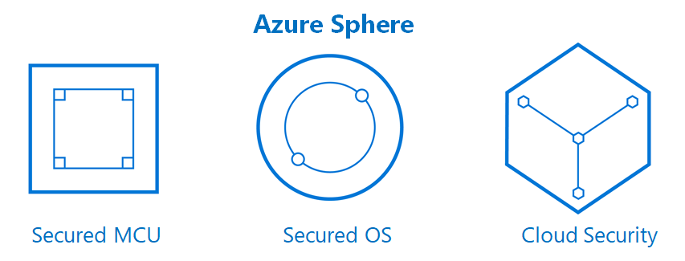

Microsoft Azure Sphere Training in Munich
In mid-June, Illia (Hardware Engineer) and Aymen (Embedded Engineer) went to Munich to attend Azure Sphere
Training. During the training, our engineers gained a deeper understanding of how comprehensive and deep
security concept is built in Azure Sphere. Microsoft has done a great job to keep the system secure and
flexible.
Networking
The training also provided a networking opportunity. Our engineers were able to talk to the manufacturer of
the chip and receive useful insights on how to build a production line with Azure Sphere chips.
qiio and Azure Sphere
Azure Sphere is a Linux-based operating system created by Microsoft for Internet of Things applications.
qiio is the OEM partner of Azure Sphere. We are proud to provide this powerful solution to our customers.